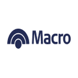

BMANYSE (ADR) · BYMA · Banco Macro S.A.
Fair value por ADR (blend propio)
USD 76.59
vs. USD 49.86 mercado · +53.6%
Local ARS 8,990 · ratio 10:1 · CCL implícito 1,803 · cierre 20-nov-2026
POSTURA DEL ANÁLISIS: CONSTRUCTIVA, CON RIESGO PAÍS ALTO — el precio descuenta ~1,174 pb de riesgo país de forma permanente, contra 1,070 pb de mercado (promedio de 90 días: 653 pb). Es el banco con más capital y menos mora de los grandes, pero también con más exposición al sector público (25.9% del activo).
Este documento es análisis independiente con fines informativos y educativos. El autor no es un asesor financiero registrado (no CFA / no matriculado ante la CNV/SEC) y este contenido no constituye una recomendación de compra, venta o mantenimiento para ningún lector en particular. Ver disclosure completo al pie.
Banco universal de capital nacional · 402 sucursales en 23 de las 24 provincias · agente financiero de provincias del NOA y NEA · integró Itaú Argentina (2023-24) · banca de individuos, pymes y empresas
Banco Macro llega a sus resultados del tercer trimestre (25 de noviembre de 2026) con el ADR en USD 49.86, 0.84
veces su valor libro y 48% por debajo del máximo de diciembre de 2024. Es el banco grande mejor capitalizado del
país (28% de capital, ARS 4.10 billones por encima del mínimo), con la mora más baja de los cuatro con ADR
(6.25%) y una guía de rentabilidad que el propio management subió de ~8% a ~12% de ROE ajustado para 2026. Su
diferencia con Galicia es la otra cara de esa fortaleza: un cuarto del activo está prestado al Estado, y su
franquicia regional depende de las provincias del norte. En un país con 1,070 puntos de riesgo país, este informe
pregunta cuánto vale ese colchón en dólares y qué Argentina compra quien paga USD 49.86: el precio la pone en
~1,170 puntos para siempre.
P/BV (libro oct-26, CCL)
0.84x
ROE real 2T26 (rep. / ajust.)
13.4% / 14.3%
Mora (BCRA) / consumo
6.25% / 8.42%
Capital (CAR = Tier 1)
28%
01 — Resumen Ejecutivo
La fortaleza de capital del sistema a 0.84 veces el libro: barato si Argentina no empeora, expuesto si el Estado tropieza
La tesis en una frase: Macro es el banco argentino que mejor resiste una mala Argentina —más
capital, menos mora de consumo, una guía de ROE que sube—, pero a USD 49.86 el mercado le pone el precio de un
riesgo país de ~1,170 puntos básicos permanentes; como un cuarto de su activo es deuda del Estado, su suerte está
atada al país más que la de Galicia.
El segundo trimestre de 2026 dejó una ganancia de ARS 206,800 millones (+39% real contra el 1T26 y +4% contra el
2T25) y un ROE real de 13.4%, 14.3% sin los ARS 21,900 millones de costos de reestructuración (retiros
anticipados y despidos: el banco cerró 89 sucursales y redujo 8% su plantilla en un año). Con ese trimestre, el
management subió la guía de ROE ajustado de 2026 de ~8% a ~12% y ratificó el objetivo de 20% para 2030. La mora
subió a 6.25% (5.40% en el 1T26), con la cartera de consumo en 8.42% y la comercial en 0.85%. Para el tercer
trimestre, Citi espera ARS 188,511 millones de ganancia —14% menos que el consenso de ARS 219,521 millones— y
Goldman Sachs proyecta una baja real de 19% en la ganancia recurrente y un margen financiero que pasa de 17.6% a
16.3%, aunque con el ROE más alto de los bancos que cubre (11.2%) y una mora en baja (6.1%).
El contexto se dio vuelta en noviembre: el riesgo país subió 29% en el mes y llegó a 1,070 puntos el 20 de
noviembre; BMA cayó 11.5% en esa semana en Nueva York, la menor caída de los cuatro bancos con ADR. Con un valor
libro de USD 59.01 por ADR (patrimonio de junio reexpresado a octubre, al CCL implícito de 1,803), cotiza a 0.84
veces el libro, contra 0.74 de Galicia —su par más directo— y 2.12 de la mediana latinoamericana.
Los cinco métodos del blend dan un fair value de USD 76.59 por ADR (+53.6%). A diferencia de
Galicia, acá los tres métodos intrínsecos ya quedan por encima del precio (USD 61-67, +23% a +34%), porque el
ROE de partida es más alto; la reversión condicionada al riesgo país (USD 75.58) y el consenso (USD 111.88)
agregan el resto. El sexto método resume la tesis: con todo lo demás del caso Base, el precio de USD
49.86 equivale a un riesgo país constante de 1,174 puntos básicos, apenas por encima del pico de
noviembre. Macro necesita menos que Galicia para que el precio quede corto; pero si el ajuste de Argentina pasa
por sus acreedores, la cartera pública de Macro (106% del patrimonio) es el canal por el que le llega.
02 — Historia: cómo sobrevivió a Argentina
De una financiera de 1976 al banco que compró bancos en cada crisis: Bansud, Suquía, Bisel, Tucumán, Itaú
Jorge Horacio Brito y Delfín Carballo fundaron la financiera Anglia en 1976; Macro Compañía Financiera se inscribió
en 1978 y en 1988 recibió la licencia de banco comercial. La estrategia de las cuatro décadas siguientes fue
siempre la misma: comprar bancos en problemas —sobre todo provinciales y regionales— cuando nadie más quería
hacerlo. En 1996 compró los bancos provinciales de Misiones, Salta y Jujuy, que lo convirtieron en agente
financiero de esas provincias. En 2001, en el borde de la crisis, tomó el 59.58% de Banco Bansud (fusionado en
2003), y tras el colapso fue, con Galicia, uno de los dos grandes bancos minoristas de capital local que
siguieron en pie (Euromoney). Después llegaron las sucursales de Scotiabank (2002), Nuevo Banco Suquía (2004),
Nuevo Banco Bisel y Banco del Tucumán (2006), la salida al NYSE (2006; 20 años en 2026) y Banco Privado de
Inversiones. La última compra fue Itaú Argentina (2023), integrada en 2024. Jorge Brito murió en noviembre de
2020; su hijo Jorge Pablo Brito preside el banco desde 2023.
ADR de BMA (USD) a cada cierre de trimestre, dic-2016 → sep-2026, contra el riesgo país EMBI invertido. Fuentes: Yahoo Finance, argentinadatos (EMBI JP Morgan).
La regla es la misma que en todos los bancos argentinos: el ADR cae 60%-90% cuando el riesgo país se dispara y
se multiplica cuando se comprime (de USD 13.35 en mar-2021 a USD 96.76 en dic-2024). Lo que distingue a Macro es
lo que hizo en las caídas: compró. Cada crisis le dio un banco más barato y una provincia más.
03 — Modelo de Negocio y Mapa de Exposición
Un banco del interior, con depósitos baratos, mucho capital y un cuarto del activo prestado al Estado
Macro atiende a 6.36 millones de clientes individuales y 228,780 empresas con 402 sucursales y 8,180 empleados
(2T26), en 23 de las 24 provincias, con fuerte presencia en el norte del país, donde es agente financiero de
provincias como Misiones, Salta, Jujuy y Tucumán: cobra sus impuestos, paga sus sueldos y administra sus
cuentas. Eso le da un fondeo barato y estable —los depósitos transaccionales son 45% del total, y en el 2T26 los
depósitos del sector público subieron 48% en el trimestre— y una base de clientes con sueldo acreditado, a la que
le presta en préstamos personales y tarjetas. Tiene 8.2% del crédito y 7.3% de los depósitos del sector privado.
No hay segmentos reportados por separado: el negocio es uno solo, un banco universal con sesgo a individuos y
pymes del interior. Su moneda funcional es el peso, así que reporta bajo NIC 29.
Banco Macro, 2T 2026. Depósitos y financiaciones en USD estimados a partir de las variaciones informadas (USD −405 M = −11% en depósitos; USD +17 M = +1% en financiaciones) y el A3500 de cierre (1,483). Fuente: 6-K del 19-ago-2026; cálculos propios.
El mapa de exposición muestra el rasgo central: los activos del sector público son 25.9% del activo, y con un
apalancamiento de 4.1 veces equivalen a 106% del patrimonio. Es más que en Galicia (99%), pero sobre todo es más
"provincial": préstamos y títulos de provincias además de los del Tesoro y el BCRA. A cambio, la liquidez es
enorme (74% de los depósitos) y la parte dolarizada del balance es menor que en Galicia (~33% de los depósitos y
~22% de las financiaciones, estimados).
04 — Desarrollos Recientes y Contexto Macro
Noviembre de 2026: el riesgo país +29% en un mes; Macro cae menos que el resto y sigue recomprando
Qué pasó en noviembre. El EMBI saltó 236 puntos en un día (20-nov) hasta 1,070 y cerró el mes con
+29%, por dudas sobre el financiamiento de 2027 (el FMI cobra USD 7,840 millones ese año), una economía casi
estancada, el resultado electoral de Brasil y la salida de Wall Street de acciones de inteligencia artificial. En
la semana al 20-nov los bancos cayeron en fila: SUPV −22.6%, BBAR −16.9%, GGAL −14.5%, BMA −11.5%.
Lo propio de Macro. (1) Resultados del 3T26 el 25-nov-2026: Citi y Goldman coinciden en que es la
única de las acciones que cubren en común que recomiendan comprar, por su capital. (2) El banco recompra acciones
propias casi a diario en noviembre (por ejemplo, 294,214 acciones a ARS 9,616.86 el 11-nov y 78,138 a ARS
8,993.32 el 20-nov, según los hechos relevantes a la CNV): un banco que compra su acción por debajo del libro
crea valor por acción. (3) La reestructuración sigue: 18 sucursales cerradas en el 2T26 y 1% menos de
plantilla, con eficiencia de 33.9%. (4) En ene-2026 colocó USD 400 millones de ON Clase H al 8% a 2031 bajo ley
de Nueva York, con la que recompró USD 278.5 millones de su ON 6.75% con vencimiento en nov-2026.
05 — Estados Financieros en USD y en Términos Reales
Un ROE de 14.3% ajustado con menos previsiones, y el margen financiero como el punto débil del 3T
Conciliación reportado → ajustado. El banco publica un ROE "ajustado" que solo excluye los costos
de reestructuración (ARS 14,200 millones después de impuestos); no excluye el RECPAM, que bajo NIC 29 es un costo
real y recurrente de tener activos monetarios en pesos. La mejora del trimestre vino de mayores ganancias por
títulos públicos a valor razonable, menos pérdida monetaria (menos inflación) y menos previsiones —tres factores
que Goldman espera que se den vuelta parcialmente en el 3T26—. Por eso el caso Base arranca 2027 con un ROE de
12% (la guía de la compañía para 2026), no con el 14.3% del trimestre.
Ganancia trimestral en millones de USD: cada trimestre llevado a pesos de su fecha (desreexpresado con el IPC) y pasado al CCL de cierre. Fuente: 6-K de cada trimestre; cálculos propios.
En los últimos cuatro trimestres (3T25 a 2T26) Macro ganó USD 271.7 millones contra una capitalización de USD
3,188 millones: un P/E de 11.7 veces, con un trimestre de pérdida adentro. Con la ganancia del 2T26 anualizada y
reexpresada a octubre, el P/E es 6.4 veces.
06 — Balance, Descalce de Monedas y Capital
USD 25 por ADR de capital que sobra: más de la mitad del precio
Ratio de capital de Banco Macro contra el mínimo regulatorio (8.2% de los activos ponderados, implícito en el exceso de 243%) y contra un 15% "cómodo". Fuente: 6-K del 19-ago-2026.
Calidad de cartera. La mora triplicó la de un año antes (2.06% → 6.25%), pero sigue por debajo
del sistema (7.50% en septiembre) y muy por debajo de Galicia (10.6%). La diferencia está en la mezcla: la cartera
comercial de Macro casi no tiene mora (0.85%), y la de consumo (8.42%) está concentrada en clientes con sueldo
acreditado. Una parte de la mora de Macro es "importada": la reclasificación obligatoria por el comportamiento
del cliente en otros bancos agrega casi un punto (5.37% sin ella).
Deuda en dólares y costo de capital. La ON Clase H (USD 400 millones, 8%, vence el 28-ene-2031,
ley de Nueva York) es el mejor dato de mercado sobre el riesgo crédito de Macro: el costo del capital propio del
caso Base (18.8% en el año 1) queda ~1,080 puntos básicos por encima, por arriba del mínimo de 300-500 de la
skill. La recompra de USD 278.5 millones de la ON 2026 en enero dejó un remanente de ~USD 121 millones con
vencimiento el 4-nov-2026.
07 — Dividendos y Acceso a Divisas
El mayor dividendo de los dos grandes, con recompras encima
La asamblea del 8-abr-2026 aprobó un dividendo de ARS 138,956 millones en moneda de dic-2025 (ARS 147,101
millones en moneda de feb-2026, ARS 217.33 por acción), pagado en tres cuotas mensuales iguales desde el 19 de mayo
de 2026, según el régimen de la Com. "A" 8410 (hasta 60% de las utilidades de 2025, tres cuotas, autorización
previa; Bloomberg Línea estimó un tope de ARS 174,400 millones para Macro). Por ADR son ARS 2,173, unos USD 1.43
al CCL de mayo-julio: un rendimiento de 2.9% sobre el precio de corte, contra 0.6% de Galicia. A eso se suman las
recompras diarias de noviembre.
Acceso a divisas. La Com. "A" 8226 permite girar al exterior los dividendos de ejercicios
iniciados desde el 1-ene-2025: el dividendo 2026 es girable. Retención de 7% (art. 97 de la Ley de Ganancias).
Con 28% de capital y un objetivo de 15%, Macro tiene USD 25.20 por ADR de capital que no necesita para operar: el
caso Base supone un payout que sube de ~58% en 2027 a ~81% en 2031, y deja implícito que ese capital se devuelve
o se presta.
08 — Comparables: Locales, Latam y EE.UU.
El par más directo es Galicia; contra Latinoamérica, Macro cotiza a 40% del múltiplo
Par más directo: Grupo Financiero Galicia (GGAL), el otro gran banco privado de capital nacional
con ADR: más grande (15.9% del crédito privado contra 8.2%), con más negocio de consumo y una fintech propia
(Naranja X), pero con más mora (10.6%), menos capital (26.0%) y un P/BV más bajo (0.74x). Ver el
informe de GGAL.
P/BV de bancos argentinos y latinoamericanos. Fuentes: Yahoo Finance; balances a sep-2026 (Latam) y jun-2026 reexpresado (Argentina).
Por qué el descuento. Ajustado por ROE (15.5% real de largo plazo en el Base) y por el costo de
capital argentino (16.2% en USD en el largo plazo), cada par latinoamericano se traduce en un múltiplo de entre
0.68x (Bradesco) y 1.31x (Banco de Chile) para Macro, con mediana 1.04x. El mercado le paga 0.84x: el descuento
que queda después de ajustar por fundamentos es el riesgo país adicional que el precio está cobrando.
09 — Gobierno Corporativo y Estructura Accionaria
Los fundadores, el FGS con más de un cuarto del capital, y una segunda generación al mando
Familias Brito y Carballo
~33%
accionistas principales (iProfesional); controlan el directorio
FGS-ANSES
~27.5%
desde la estatización de las AFJP (2008); con directores en el banco
Free float
~39%
34.5% inversores del exterior + 4.7% locales
ADR
1 ADR = 10 Clase B
NYSE desde 2006; 63.9 M de ADR equivalentes
Presidente
Jorge Pablo Brito
desde 2023; su padre murió en nov-2020
CFO
Jorge F. Scarinci
firma los 6-K
La composición accionaria proviene de iProfesional y de datos más antiguos de Wikipedia (Brito 16.59% y Carballo
5.68% hacia 2012); debe verificarse contra el 20-F 2025. Para el minoritario, el dato más relevante es el FGS:
con ~27.5% del capital, el Estado nacional es el segundo accionista de Macro —más que en Galicia (~16.6%)— y tiene
directores en el banco. En 2026 eso no fue un problema, pero en un cambio de gobierno el FGS puede votar con
criterios distintos a los de un inversor. A favor: los fundadores tienen un historial largo de comprar barato y
fusionar sin diluir a los minoritarios, el banco recompra acciones por debajo del libro y no es una holding (no
hay descuento de holding en este informe, a diferencia de GGAL).
10 — Registro de Riesgos
Riesgos en capas, cada uno con el episodio argentino que lo ancla
11 — Catalizadores
Agenda de eventos que pueden mover la acción
12 — Modelo Proyectado y Consenso
Las cinco casas con objetivo reciente ven entre USD 86 y USD 150
La macro de consenso (REM, 5-nov-2026) supone 21.8% de inflación en los próximos 12 meses y crecimiento de 0.7%
en 2026. El supuesto que manda en todos los métodos intrínsecos es la senda de ROE real, anclada en la guía de la
compañía: ~12% en 2026 y un objetivo de 20% para 2030, que el caso Base no toma completo.
13 — Valuación: 6 Métodos y Fair Value
Cuánto vale en dólares, en qué Argentina, y qué Argentina descuenta el precio
Costo de capital en USD, con riesgo país explícito
Mismo marco que el informe de GGAL (archivo compartido): Ke en USD = Treasury 10Y (4.91%) + 0.76 (beta de bancos
money-center de EE.UU., Damodaran ene-2026) × 4.23% + riesgo país, con senda lineal del año 1 al 5 y Ke real
con inflación de EE.UU. de 2.5%. Con el CRP de Damodaran (9.71%), el Ke sería 17.83%.
Método 1 — DDM de payout total en USD (15%)
Libro inicial USD 59.01 por ADR. Bear USD 25.87, Base USD 63.29 (P/BV terminal 1.16x; 68% del valor en el
terminal), Bull USD 102.06 → esperado USD 61.76. El Residual Income Model da exactamente lo mismo
(chequeo del script).
Método 2 — P/BV justificado de estado estable (15%)
0.64x / 1.16x / 1.77x sobre el libro, sin descuento de holding (Macro es el banco operativo) → USD 32.79 / 68.66
/ 104.62 → esperado USD 66.89.
Método 3 — Comparables Latam ajustados por ROE y por riesgo país (20%)
Con la misma fórmula de Gordon que en GGAL, los múltiplos ajustados van de 0.68x (Bradesco) a 1.31x (Banco de
Chile), mediana 1.04x → USD 61.22 (rango intercuartil USD 50.41-71.62).
Método 4 — Reversión del P/BV condicionada al riesgo país (30%)
27 trimestres de la era NIC 29 (1T20-3T26): P/BV = 1.531 − 0.309 × (riesgo país / 1,000), R² 0.46. Medianas por
régimen: 1.36x por debajo de 800 pb, 1.43x entre 800 y 1,500, 0.76x por encima de 1,500. En los 810 pb del Base,
1.28x → USD 75.58. Con el riesgo país del 20-nov (1,070), la recta daría 1.20x: el 0.84x de
mercado queda debajo incluso de esa referencia.
P/BV de BMA (en pesos: precio local × acciones / patrimonio de cada fecha) contra el riesgo país a cada cierre de trimestre, 1T20-3T26. Fuentes: SEC (20-F), 6-K, Yahoo, argentinadatos; cálculos propios.
Método 5 — Consenso (20%)
Promedio de cinco precios objetivo dentro de la ventana de 90 días (Sección 12): USD 111.88. Advertencia: cuatro de los cinco son de octubre, antes del salto de noviembre; el más reciente (Citi, 13-nov) es también el más bajo, USD 86.01.
Método 6 — Riesgo país implícito (no entra al blend)
Con el resto del caso Base fijo, el DDM iguala el precio de USD 49.86 con un riesgo país constante de
1,174 puntos básicos, contra 1,070 de mercado y 653 de promedio de 90 días. Es menos castigo que el que
descuenta Galicia (1,334 pb): el mercado ya reconoce el capital y la mora más baja de Macro, pero igual lo
valúa como si el riesgo país de la peor semana del año fuera permanente y un poco peor.
Blend y fair value
Lectura honesta: los tres intrínsecos (USD 61-67) ya quedan 23%-34% arriba del precio; con el riesgo país del
20-nov fijo para siempre, el DDM Base daría USD 53.84, todavía 8% arriba. La reversión y el consenso suman el
resto, y el consenso es la pata más frágil: es anterior al estrés de noviembre.
Grilla de sensibilidad: riesgo país de largo plazo × devaluación real del CCL
Football field: rango de cada método (Bear → Bull, intercuartil o regímenes), precio de mercado y fair value. Fuente: valuacion.py.
Chequeo de sesgo de la skill. DDM Base (USD 63.29) a 1.27 veces el precio, dentro de ±50%; Bear
USD 25.87, no cero. (1) Monedas: libro de octubre en pesos sobre el CCL implícito del mismo día; ROE real contra
Ke real. (2) Riesgo país una vez: beta de EE.UU. + EMBI; el Bear suma riesgo país alto y pérdida soberana, sin
ROE negativo. (3) Tipo de cambio: CCL, no oficial. (4) Año base: 12% (guía), no el 14.3% del trimestre. (5) ROE
NIC 29 neto del RECPAM. El fair value queda arriba del precio y el riesgo país implícito lo explica.
14 — Limitaciones del Modelo
Qué asume este análisis, y dónde puede fallar
Sin el 3T26: los resultados se publican el 25-nov-2026; Citi espera 14% menos ganancia que el
consenso. Paridad del poder adquisitivo de largo plazo en el paso del Ke en USD a real; la grilla
muestra el costo de una devaluación real. Sensibilidad al riesgo país: entre 550 y 1,100 pb de
largo plazo el fair value va de USD 71.27 a USD 83.10. Datos en USD durante el cepo: serie con
CCL; el P/BV previo a 2020 (sin NIC 29) quedó fuera de la regresión. Tipo de cambio: libro en
USD al CCL implícito (1,803); al oficial mayorista sería 15% más alto. Moneda de los depósitos:
las proporciones en USD son estimadas a partir de variaciones informadas. Consenso viejo:
cuatro de cinco objetivos son de octubre. Accionistas: porcentajes de fuentes secundarias.
Damodaran: tabla de ene-2026 (la de jul-2026 no se pudo confirmar en la fuente).
Merval en USD: sin serie histórica disponible (BYMA sin respuesta); se usó el ADR.
Documento elaborado a partir de fuentes públicas: SEC EDGAR (6-K de Banco Macro del 19-ago-2026 —2Q26 Earnings
Release— y hechos relevantes de recompras de nov-2026; 20-F y XBRL companyfacts 2018-2024; 6-K de Grupo
Financiero Galicia del 25-ago-2026), BCRA (Informe sobre Bancos ago y sep-2026, REM oct-2026, Comunicaciones "A"
8226, 8397, 8410 y 8423), INDEC (IPC), api.argentinadatos.com (riesgo país EMBI, CCL, MEP, oficial, inflación),
Yahoo Finance (precios, balances de bancos latinoamericanos, Treasury 10Y), Damodaran Online (ctryprem.xlsx y
betas.xls, ene-2026), PR Newswire (resultados 4T25 de Macro), Forbes Argentina, iProfesional, Bloomberg Línea,
Ámbito, El Cronista, Infobae, Euromoney, La Nación, Wikipedia, Bruchou & Funes de Rioja y abogados.com.ar
(ON Clase H). Cifras fundamentales al 30-jun-2026; precios, tipo de cambio y riesgo país al 20-nov-2026. Contexto
compartido y fuentes con fecha en .claude/skills/informe-argentina/modelos/_compartido/contexto-2026-11.md.
Riesgos específicos: las acciones argentinas tienen riesgo país, cambiario, regulatorio y de
liquidez adicionales a los de una acción de EE.UU.; los valores en USD dependen del tipo de cambio utilizado.
Sobre el autor y la naturaleza de este documento: este informe es un análisis independiente
elaborado por Manfredi Investment Research & Markets con fines exclusivamente informativos y educativos. El
autor no es un asesor de inversión registrado, no está matriculado ante la Comisión Nacional de Valores (CNV), la
SEC, ni ningún otro organismo regulador equivalente, y no mantiene una relación de asesoramiento financiero
personalizado con el lector. Ninguna cifra de este documento —incluido el "fair value" de portada, los escenarios
de valuación, ni la síntesis de la Sección 13— constituye una recomendación de compra, venta o mantenimiento para
ningún lector en particular, ni considera la situación financiera, los objetivos o el perfil de riesgo individual
de quien lo lee. Los escenarios de valuación son estimaciones propias sujetas a los supuestos declarados
explícitamente en la Sección 13, y no representan guidance oficial de ninguna de las compañías mencionadas salvo
donde se cita de forma directa y atribuida. Verificar cifras contra los últimos estados contables presentados ante
la CNV y la SEC, y consultar a un asesor financiero matriculado, antes de tomar cualquier decisión de inversión.